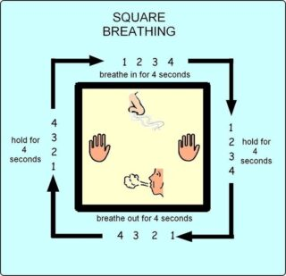
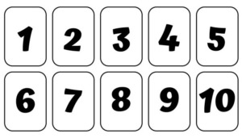
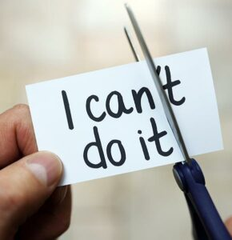
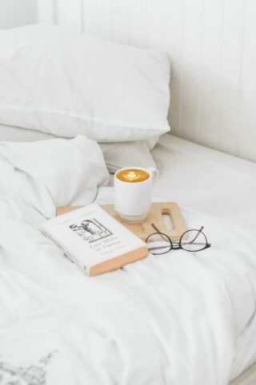

Take deep slow breaths using the box breathing technique will help reduce your anxiety.
Try it now
Visit the EMBER Non Verbal Communication App for more tips on how to remain calm.
Download – Ember
emberapp.com.au

Distracting yourself by counting can help you not focus on things that are making you scared.
You can do this in different ways
Holding things can also bring a sense of comfort.
Examples of things you could hold are:
Talking to ourselves positively – changing the way we think will help us feel more confident.
Say phrases aloud or in your mind such as:


It is good to practice these strategies regularly so you can use them when they are needed.
Every person is different and will have their own preference as to which strategy works best for them.
Think about which one works best for you or you can reflect or talk to someone about what strategy you like to use.